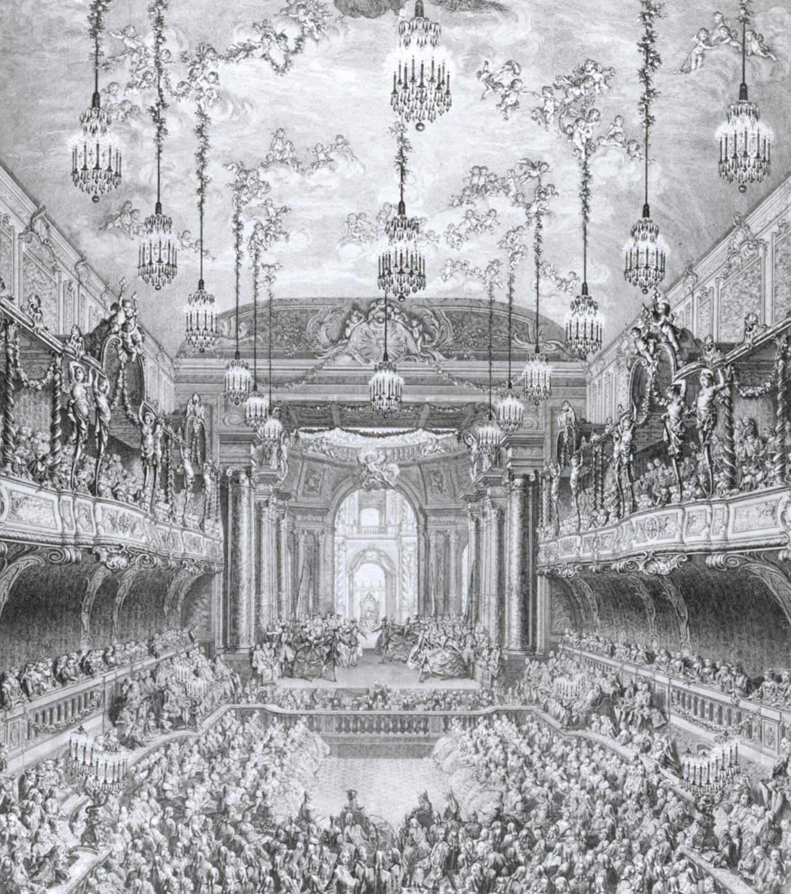
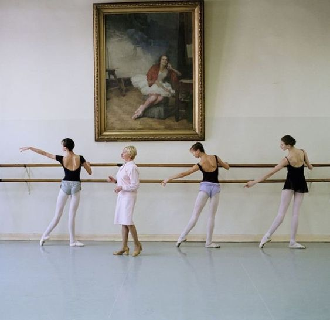
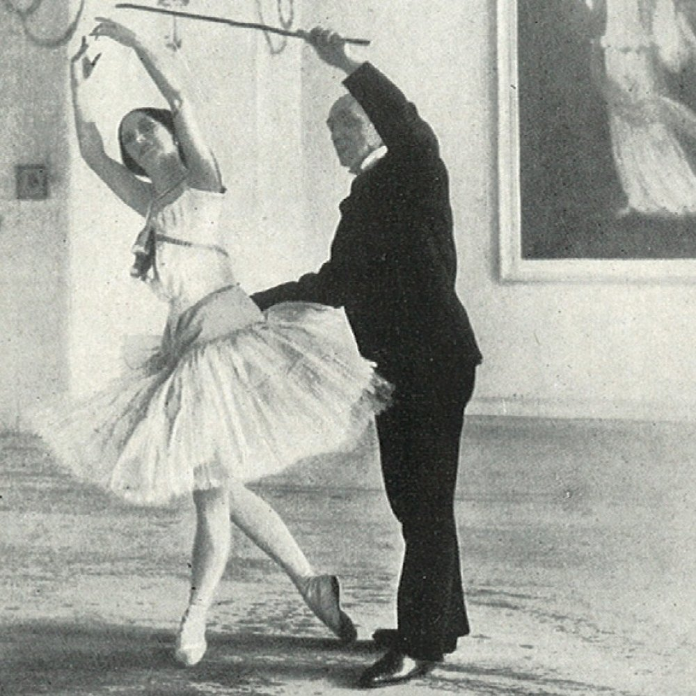
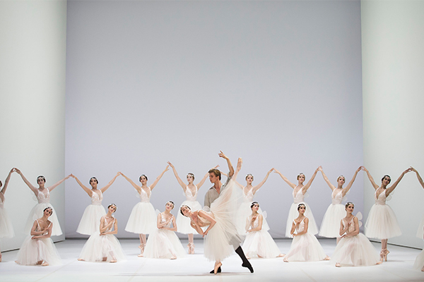
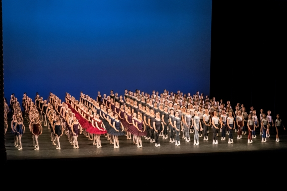
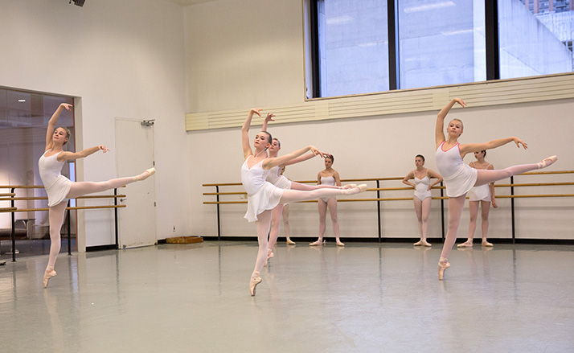

Postoje šest široko prihvaćenih, međunarodno priznatih metoda za podučavanje ili proučavanje baleta. Te metode su: Francuska
škola, Vaganova metoda(Ruski stil), Cecchetti metoda(Italijanski stil), Bournonville metoda (Danski stil), metoda Kraljevske
akademije baleta (engleski stil) i Balanšin
metoda (američki stil).
Francuska metoda

Francuska metoda je temelj svih obuka baleta. Kada je Luj XIV osnovao Kraljevsku akademiju baleta (Académie Royale de Danse)
1661. godine, pomogao je stvaranju kodificirane tehnike koja se i danas koristi u profesiji, bez obzira na metodu obuke koju
slijede. Francuska škola baleta posebno je obnovljena pod vodstvom Rudolfa Nureyeva 1980-ih godina. Zapravo, francuska škola se
ponekad naziva i Nureyev škola. Francuska metoda često se karakterizira tehničkom preciznošću, fluidnošću i gracioznošću, te
elegantnim, čistim linijama. Za ovaj stil često se koristi brzo izvođenje stopala kako bi se stvorio dojam da izvođači lagano
klize po pozornici. Dva važna obilježja ove tehnike su specifičan način izvođenja port de brasa i epolmana, koji su zaobljeniji
nego u ruskom stilu, ali ne toliko zaobljeni kao u danskom stilu.
Vaganova metoda

Vaganova metoda je stil obuke baleta koji je nastao u ruskom baletu, a osmislila ju je Agrippina Vaganova. Nakon
što je prestala plesati 1916. godine, Vaganova se posvetila poučavanju u Leningradskoj koreografskoj školi od
1921. godine. Njen metod obuke danas je međunarodno priznat, a njena knjiga "Osnove klasičnog plesa" (1934.)
smatra se klasikom u toj oblasti. Ovaj metod se odlikuje spajanjem klasičnog francuskog stila, posebno elemenata
romantične ere, s atletičnošću italijanskog metoda i duševnom strašću ruskog baleta. Metoda naglašava razvoj snage,
fleksibilnosti i izdržljivosti za pravilno izvođenje baleta. Vaganova je zagovarala verovanje da bi jednaka
važnost trebala biti posvećens i rukama i nogama prilikom izvođenja baleta, jer to donosi harmoniju i veći
izražaj tela kao celine.
Cecchetti metoda

Razvijen od strane Enrica Cecchettija (1850-1928), ovaj metod je poznat širom svijeta po intenzivnom
oslanjanju na razumevanje anatomije u kontekstu klasičnog baleta. Cilj ovog metoda je usađivanje važnih
karakteristika za izvođenje baleta kod učenika kako se ne bi oslanjali na imitacije nastavnika.
Važni elementi ovog metoda su naglasak na ravnoteži, elevacijama, držanju i snazi. Ovaj metod
ističe važnost prepoznavanja da svi delovi tela zajedno stvaraju lepe, graciozne linije, te
upozorava da se ne razmišlja o baletu u smislu odvojenih dijelova poput ruku, nogu, vrata i trupa.
Ovaj metod je poznat po osam port de brasa koje koristi.
Bournonville metoda

August Bournonville je trenirao sa svojim ocem Antoineom Bournonvilleom i drugim
poznatim francuskim balet majstorima. Bio je snažno inspirisan ranim francuskim
školama baleta, koje je očuvao u svom poučavanju i koreografiji kada su tradicionalne
francuske metode počele nestajati iz evropskog baleta. Ono što se danas smatra
"Bournonville stilom" je suštinski nefiltrirana tehnika 19. veka francuske škole
klasičnog plesa. Bournonville naglašava da ples ne bi trebao biti samo izražaj radosti i
romantike, već da dira srce s prirodnom gracioznošću, preciznošću, dramatičnim utjecajem i
harmonijom između tela i muzike. Plesači zrače gracioznošću, lakoćom i delikatnim detaljima,
bez napora izvode pokrete koji su tehnički zahtjevni. Bournonville tehnika je
obilježena lakoćom i brzim radom nogu uz opušteno gornje telo, pri čemu su oči spuštene, a
gornje telo sledi radnu nogu, kako bi izražavao ljubaznost umesto ponosa. Ključni element ove
tehnike je karakterističan podignuti okvir torza; korištenje dijagonalnih i gracioznih epolmana u kojima
se gornje tijelo okreće prema radnoj nozi. Uključuje osnovnu upotrebu oblikovanih i mekih ruku koje
se obično drže u preparatoire poziciji na početku i kraju svakog pokreta. Piruete
započinju iz niske pozicije, često s niskim développéom sa strane za vanjske
okrete i s niskim développéom u četvrtu poziciju za
unutarnje okrete. Skokovi stvaraju iluziju nepomične lakoće.
Ova tehnika se posebno usredotočuje na romantični ton i priča
živahnu ljubavnu priču. Noge definiraju ritam dok ruke definiraju melodiju.
Glavni princip je izvoditi s prirodnom gracioznošću i
s harmonijom između tijela i glazbe.
Metod kraljevske akademije baleta

Metod Kraljevske Akademije Baleta (RAD), poznat kao engleski stil baleta, osnovan je 1920. godine od strane grupe uticajnih
ličnosti iz sveta baleta, uključujući Genee-a, Karsavinu, Bedells-a, E Espinosu i Richardson-a. Glavni cilj ovog metoda je
promovisanje akademskog obrazovanja u klasičnom baletu širom Velike Britanije. Vremenom se ovaj stil proširio i na Sjedinjene
Američke Države i danas je široko korišćen. RAD metoda sledi strukturiranu nastavnu metodologiju sa posebnim nivoima koje učenici
prelaze tokom svog obrazovanja. Jedan od ključnih principa RAD metoda je naglasak na učenju osnovne tehnike baleta u sporom tempu.
Progresija težine koraka je često sporija u poređenju sa drugim metodama baleta. Ideja iza ovog pristupa je da, kroz posvećivanje
dovoljno vremena i truda savladavanju osnovnih koraka, učenici razvijaju snažnu tehničku osnovu. Ova čvrsta tehnika im omogućava da
se sa većom lakoćom suoče sa naprednijim i izazovnijim koracima. RAD metoda se fokusira na pravilan položaj tela, tehniku i umetnost
baleta. Stavlja akcenat na preciznost, muzikalnost i izražajne kvalitete u pokretu. Obuka obuhvata i fizičke i umetničke aspekte
baleta, sa naglaskom na razvoj snage, fleksibilnosti i koordinacije. RAD metoda takođe uključuje sveobuhvatan sistem ispitivanja,
koji omogućava učenicima praćenje svog napretka i formalno priznanje
za postignuća. Ispitivanja se održavaju na različitim nivoima i ocenjuju tehničke veštine plesača, muzikalnost, kvalitet izvođenja
i razumevanje teorije baleta.
Metoda Kraljevske Akademije Baleta pruža strukturiran i sveobuhvatan pristup obuci u baletu, obezbeđujući da plesači steknu
snažnu osnovu u tehnici i umetnosti dok napreduju kroz različite nivoe nastavnog programa.
Balanšin metoda

Metoda Balanšina je lako prepoznatljiva iz mnogo različitih razloga. Jedna od najpoznatijih karakteristika je arabeska sa
otvorenim kukovima. Pokreti baleta obično se grade oko "kutije", koju formiraju četiri ugla kukova i ramena, koja se ne narušava
podizanjem kukova ili ramena izvan svoje pozicije. Međutim, Balanšin je smatrao da otvaranje kuka podignute noge stvara iluziju
više arabeske. Gornji deo tela u Balanchineovoj metodi često izgleda veoma drugačije u odnosu na druge metode. Položaji port de
brasa su otvoreniji i manje zakrivljeni, dok su zglobovi ruku više savijeni, a prsti slobodniji. Balanšin je takođe video prostor
za promene u radu na vrhovima prstiju. Ruski stil podrazumeva mali skok kako bi se došlo na vrh prstiju, međutim, Balanchine je
želeo da vidi glatki prelaz stopala kroz polu-prst i zatim na puni vrh prstiju. U njegovoj metodi, nema skoka; umesto toga, stopalo
se glatko diže na vrh prstiju. Nakon što je došao u Ameriku, osnovao svoju školu "Škola Američkog Baleta" i kasnije osnovao
kompaniju "New York City Ballet", nastavio je da usavršava principe obuke svojih plesača.